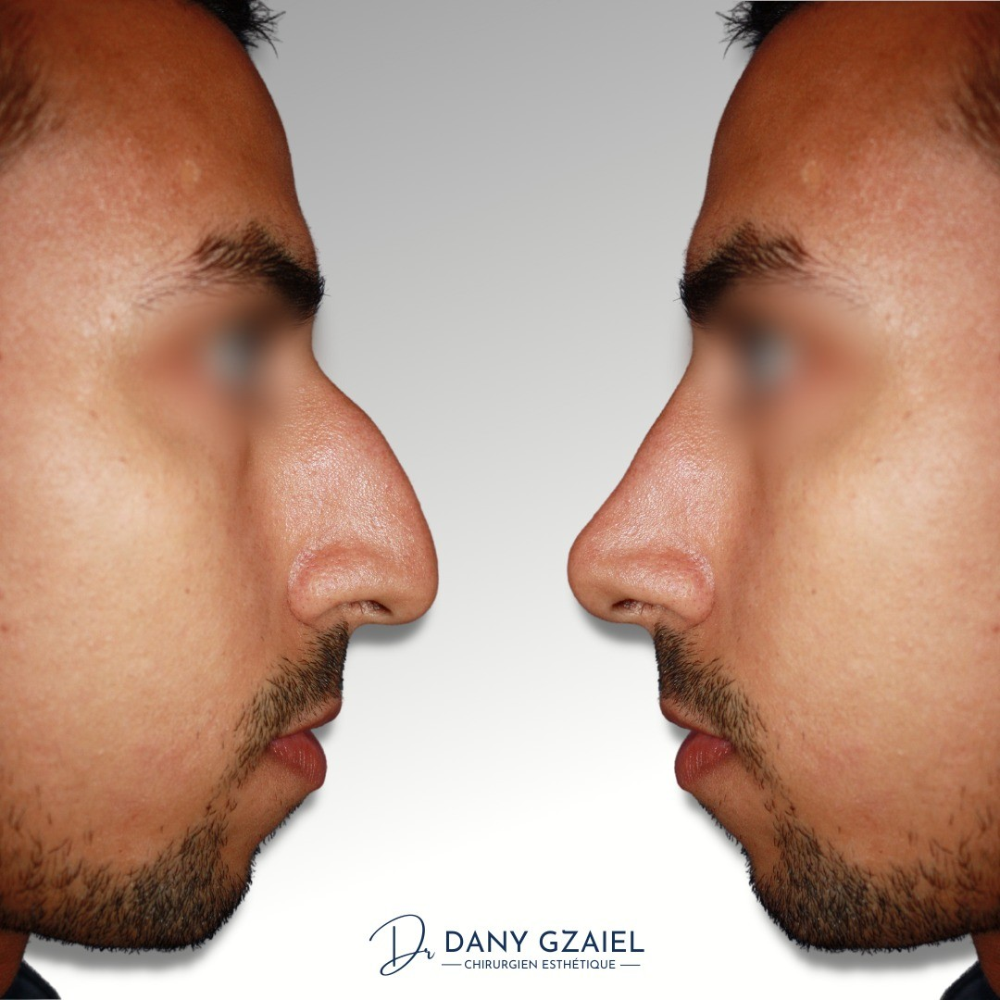
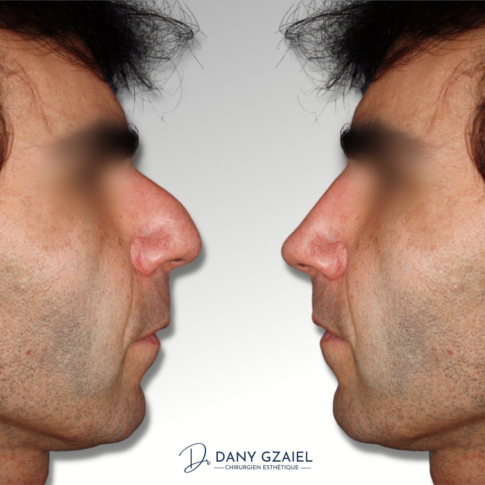
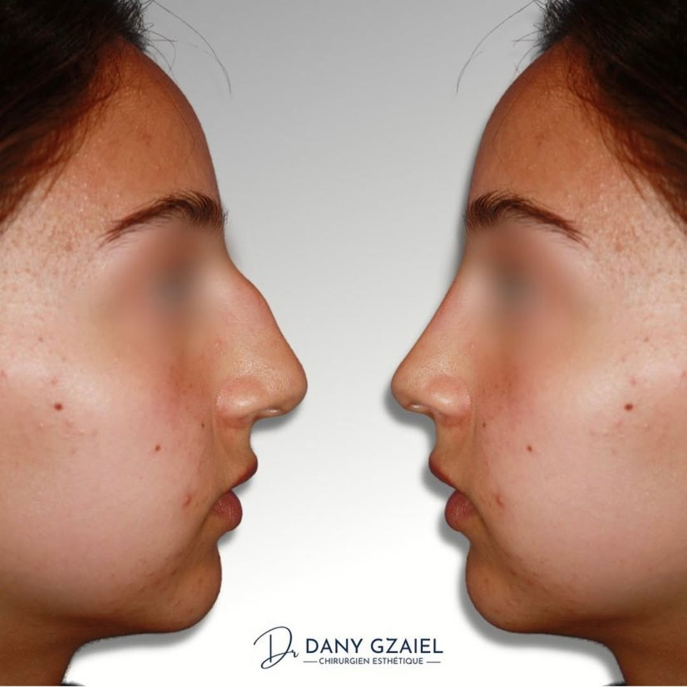
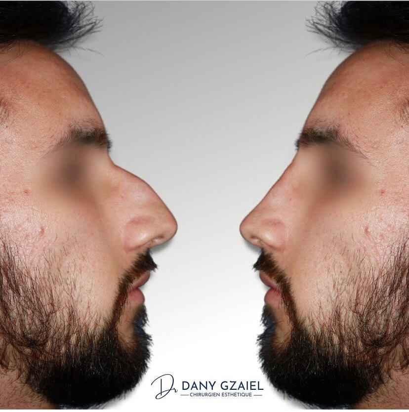
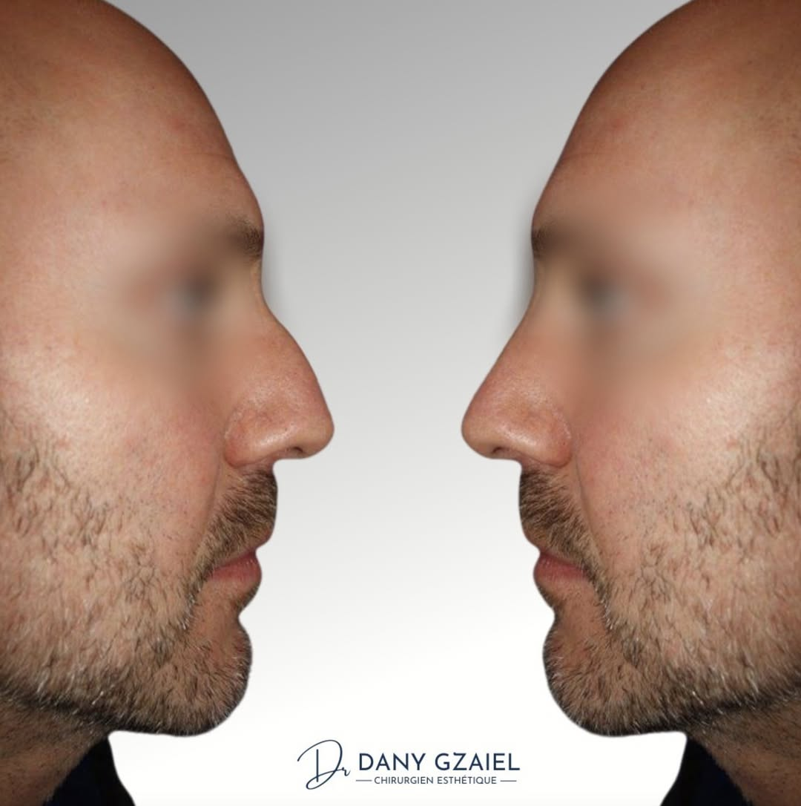
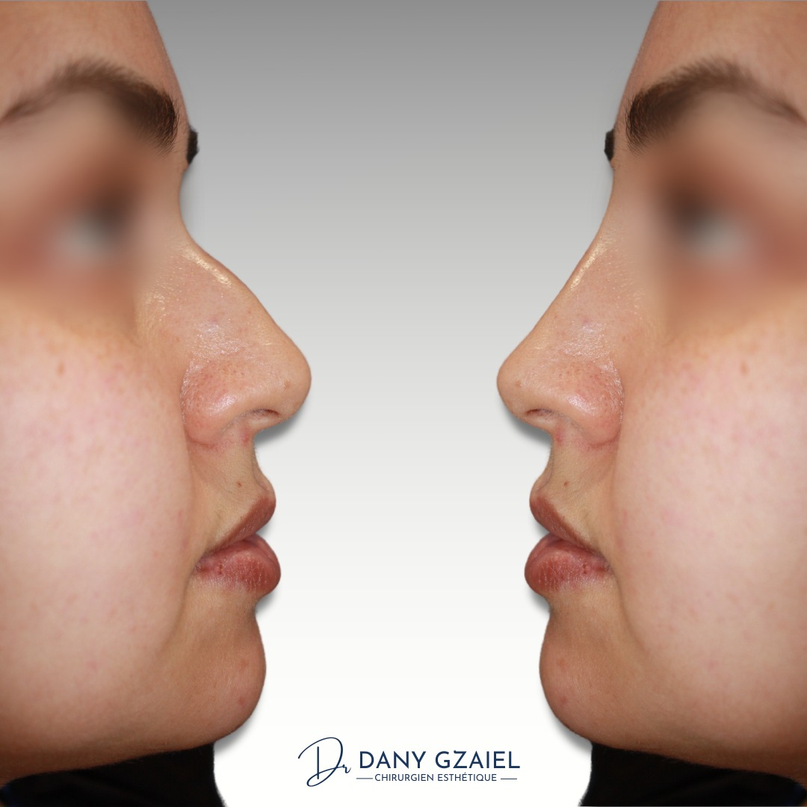

01 — Rhinoplastie
Rétablir l'harmonie du nez et du visage.
La rhinoplastie est envisagée après une analyse morphologique et fonctionnelle complète, avec un projet construit en consultation.
En quoi consiste cette intervention ?
La rhinoplastie vise à corriger la forme du nez, son volume ou ses proportions, tout en respectant l'équilibre global du visage. L'objectif est d'obtenir un résultat naturel, adapté à votre morphologie et à votre demande.
Selon les situations, un geste fonctionnel peut être associé pour améliorer la respiration nasale. Les indications sont validées uniquement après examen clinique, analyse photographique et échange détaillé en consultation.
Le Dr Dany Gzaiel présente les bénéfices attendus, les limites du geste et les suites prévisibles, afin de permettre une décision éclairée dans un cadre médical rigoureux.
Avant / Après
Résultats obtenus en consultation, présentés avec l'accord des patients.






La philosophie du Dr Gzaiel
La rhinoplastie est le geste qu'il considère comme le plus exigeant de la chirurgie plastique : il engage simultanément trois éléments distincts — la peau, l'os et le cartilage — avec des cicatrisations qui varient d'un patient à l'autre. Pour chaque cas, il choisit la technique adaptée : la voie externe, privilégiée pour un travail de haute précision sur la pointe nasale, ou la voie interne pour les corrections plus ciblées comme une bosse nasale isolée.
Avant de planifier le geste, une simulation photo en 3D est réalisée. Elle n'est pas contractuelle, mais permet d'établir un dialogue clair : qu'est-ce qu'on réduit, qu'est-ce qu'on augmente, qu'est-ce qu'on rétrécit ou allonge — jusqu'à ce que le chirurgien et le patient tombent d'accord sur le projet. C'est seulement à ce moment-là que l'intervention peut être programmée.
Comment se déroule l'intervention ?
- Consultation : examen clinique, analyse des attentes et discussion du projet opératoire.
- Bilan préopératoire : consignes, examens utiles et validation médicale avant programmation.
- Intervention : réalisation du geste selon le plan défini, sous anesthésie générale.
- Suites : contrôles réguliers au cabinet et accompagnement postopératoire structuré.
Questions fréquentes
À partir de quel âge une rhinoplastie est-elle possible ?
L'indication dépend de la fin de croissance, de l'examen clinique et du contexte médical. Cette évaluation est réalisée lors de la consultation.
La respiration peut-elle être améliorée en même temps ?
Oui, dans certaines situations une correction fonctionnelle est associée pour traiter une gêne respiratoire objectivée.
Combien de temps faut-il pour voir le résultat final ?
Le résultat évolue progressivement. Une amélioration est visible rapidement, mais l'aspect final nécessite plusieurs mois.
Une reprise d'activité est-elle possible rapidement ?
Un délai de repos est nécessaire. Les modalités précises sont adaptées à votre activité et précisées pendant le suivi.
Prendre rendez-vous
Pour une première consultation, le secrétariat du cabinet vous oriente vers un créneau adapté.